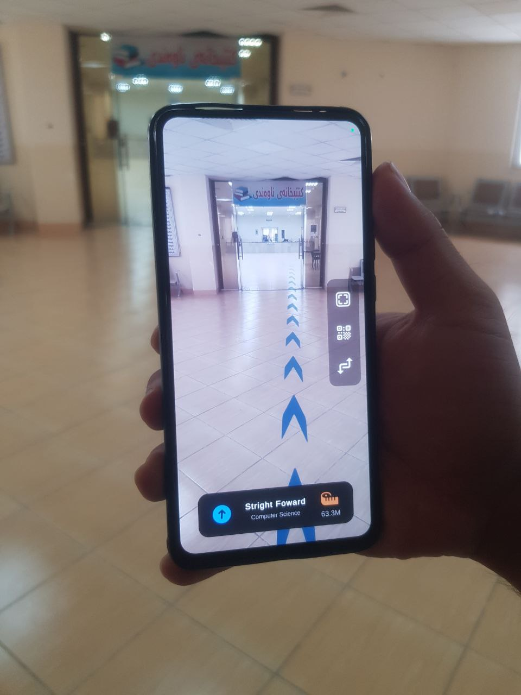

About the App
The AR Indoor Navigation App is designed to provide seamless navigation within Charmo University campus. Using augmented reality (AR) technology, the app allows users to easily find their way through buildings, locate specific rooms, and receive real-time directions.
Download App